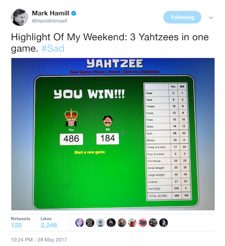
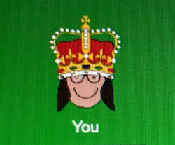
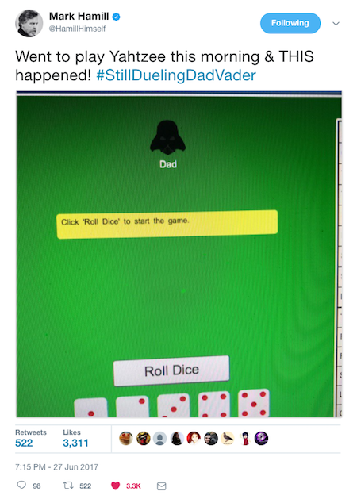
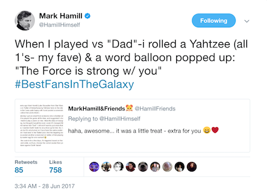

An easter egg for one user: Luke Skywalker
Posted: Last updated:Episode IV: A New Tweet
A few weeks ago a user on my site, cardgames.io, sent me a message saying that Mark Hamill had just tweeted a photo of himself playing Yahtzee. I looked, and sure enough, there it was:
I was happy to see it, posted about it on social media, and it was just a nice weird experience. I didn't think about it much after that, until a couple of days ago when I got an email. The email was from a person who was familiar with Mark and said that she knew that he liked the game and played it all the time. She suggested that I could play a prank on him by changing the opponent's name to Mark. I liked the idea of doing something like that but figured that it would be cooler if I could change the opponent to Darth Vader and just name him "Dad".
Episode V: The Easter Egg Strikes Back
I spent an hour or so coding up the easter egg. I wanted to target Mark specifically, not just show everyone Darth Vader, since the name "Dad" doesn't really apply to anyone but him! There are no user accounts on the site, but in the original Tweet I had noticed that he had made a custom avatar on the site, a girl with glasses:
Using that information I created a trigger that only activated Darth Vader when someone with that avatar was playing (well, almost, anyone with that hair, glasses and smile, couldn't be sure about skin tone or hair color from the screenshot).
Episode VI: Return of the Jedi
I didn't have to wait long. The next day Mark posted the following tweet:
So, the plan worked, he saw the easter egg and seemed to enjoy it. But I had put one small extra feature in. Would he run into that one?
Yes he did! So that was the story of my easter egg for one user, probably my favorite piece of code I've ever written.
//TODO: Write an epilogue and somehow shoehorn the name "The Force Awakens" in there...